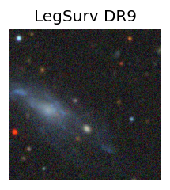
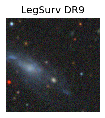
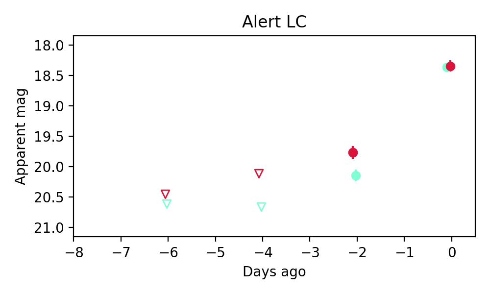
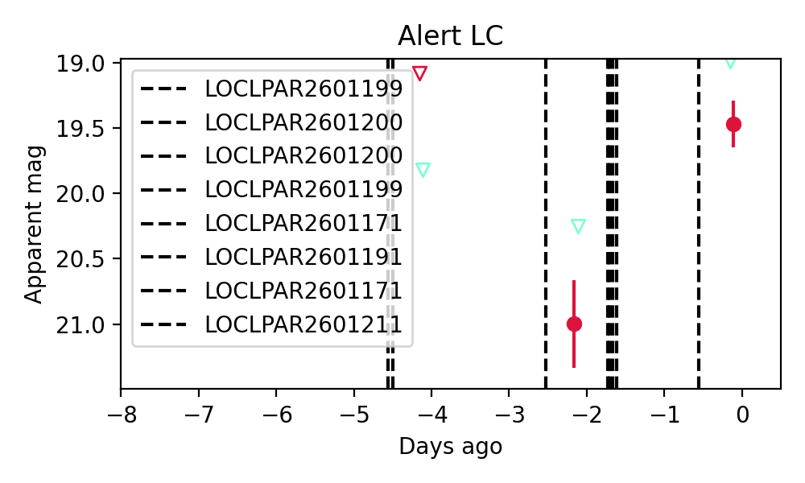

Candidate List 20260122Previous Day Next Day
Section 1: New Sources (age<1d) Section 2: Old (1-5d) sources observed last nightplaceholder
Section 1: New Afterglow/FBOT Cands Last Night (0)
Section 2: Older Sources Observed Last Night (2)
0. ZTF26aacwiog (Afterglow?) [Back to Top] [Share] [Trigger Swift] [Fritz] [Lasair]RA, Dec: 218.61376, 21.94968 14h34m27.30s, 21d56m58.85sGalactic (l, b): 26.10503, 66.05286 ext(g-r) = 0.057
 

TESS: Sectors 50
PS1: 0 sources in 3 arcsec
LegacySurvey: 1 sources in 3 arcsec Closest: d = 4.87 arcsec, 68.7 deg (east of north) photoz=0.75 (68% bounds 0.67, 0.81), type=REX peak abs mag = -25.03 (68% bounds -24.76, -25.25)

Extinction-corrected gr color:
From alerts: -0.03 +/- 0.1 mag
Consistent with synchrotron, g-r>0!
Rise Rate:
g: 0.92 mag/day
r: 0.69 mag/day
i: -99 mag/day
Fade Rate:
g: -99 mag/day
r: -99 mag/day
i: -99 mag/day
1. ZTF26aadpaou (FBOT?) [Back to Top] [Share] [Trigger Swift] [Fritz] [Lasair]RA, Dec: 269.63429, 52.09865 17h58m32.23s, 52d 5m55.14sGalactic (l, b): 79.79297, 29.00472 ext(g-r) = 0.041


TESS: Sectors [ 14 18 21 24 25 26 40 41 48 51 52 53 54 58 74 75 78 79
80 81 82 85 117 119 120]
SDSS (10 arcsec):Found SDSS phot-z: z=0.25; peak abs mag = -21.23
PS1: 0 sources in 3 arcsec
LegacySurvey: 1 sources in 3 arcsec Closest: d = 0.84 arcsec, 284.4 deg (east of north) photoz=0.11 (68% bounds 0.06, 0.17), type=REX peak abs mag = -19.13 (68% bounds -17.87, -20.15)

Extinction-corrected gr color:
From alerts: -0.52 +/- 99 mag
Rise Rate:
g: -99 mag/day
r: 0.75 mag/day
i: -99 mag/day
Fade Rate:
g: -99 mag/day
r: -99 mag/day
i: -99 mag/day